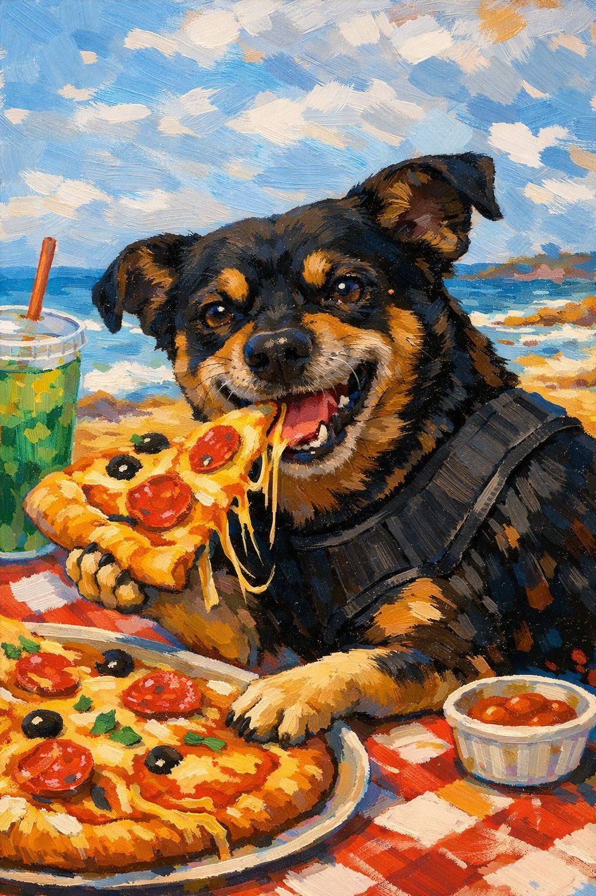

Hola… 🐶
Sé que me estás buscando en la casa, en la puerta, en esos lugares donde siempre estaba pendiente de todo… como buen dueño que era 😌
No te preocupes, sigo aquí… solo que ahora descanso bajo mi planta de limón 🍋, mi lugar favorito. ¿Te acuerdas cuánto me gustaba jugar con ellos? Nunca me aburría… siempre tenía energía para una vuelta más contigo.
A veces no quería que me tocaras, es verdad… pero tú sabías cuándo sí. Porque lo nuestro no era cualquier cosa… era compañía de verdad ❤️
Gracias por abrirme la puerta cada vez que quería salir. Yo siempre regresaba rápido… porque mi lugar era contigo. Siempre lo fue.
Y sí… sé que yo mandaba en la casa 😎🐾 pero tú eras mi persona.
No estés triste por mucho tiempo… mejor recuérdame corriendo, jugando, esperando en la puerta, o mirándote como diciendo “aquí estoy, todo está bajo control”.
Porque así sigo… cuidando, a mi manera.
Nos volveremos a ver… pero mientras tanto, cada vez que veas un limón caer 🍋… acuérdate de mí.
🐾 Tu fiel compañero.... KRATOS 🐾